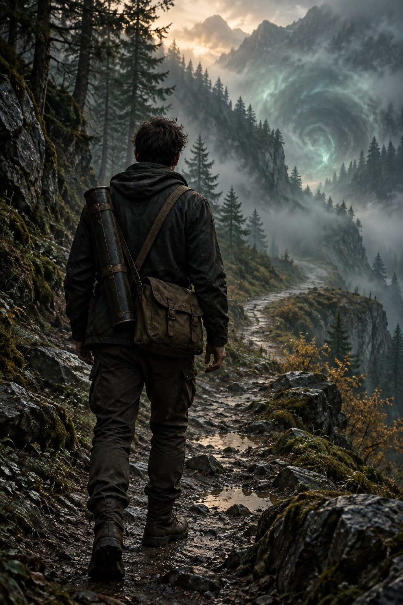

산과 숲 가까이에서 지냈다. 익숙한 길도 비가 오거나 해가 지면 달라진다는 것을 알았고, 돌아설 때를 놓치지 않는 법을 배웠다. 지도 제작자로 일할 때에는 오래된 도면을 믿기 전에 길을 직접 걸었다. 막힌 통로와 바뀐 출입구를 확인하고 나서야 지도에 선을 그었다.
어느 날, 지도에서 사라진 구역에서 살아 돌아왔다. 돌아온 뒤 살펴본 지도에는 그곳으로 이어지는 길만 남아 있었다. 기억을 따라 다시 걸어도 같은 장소를 찾을 수 없었다. 시각과 위치, 이동하며 본 변화를 잊기 전에 적었고, 직접 본 일과 나중에 들은 설명을 구분했다.
그때 성맥에 접속해 장소의 흐름에서 신비를 끌어쓰는 힘이 드러났다. 힘은 장소마다 다르게 반응한다. 낯선 징후를 감지하고 조건을 비교할 수 있지만, 감지했다는 이유만으로 현상의 원인을 안다고 말하지는 않는다. 지도를 다시 그릴 때도 확인한 경로와 아직 검증하지 못한 구역을 따로 표시한다.
현장에서 조사 1팀 요원과 필요한 일을 나눠 맡은 뒤 연락이 이어졌다. 합류 제안 앞에서는 먼저 익혀야 할 기록법과 안전 절차를 물었다. 사건은 끝났다고 기록됐지만 사라진 구역에는 여전히 설명되지 않은 부분이 있다. 답을 찾고 싶다는 마음과 모두 돌아올 길을 확보해야 한다는 원칙을 함께 안고 조사 1팀에 들어왔다.

외형 정보 미정 · 분위기 삽화TEAM 01 / NEW ARRIVAL
FROM THE MAP TO TEAM 01
조사 1팀에 오기까지
01
직접 걸어 만든 지도
도면과 실제 길을 대조하고, 다시 찾아갈 수 있는 경로를 남겼다.
02
사라진 구역
공상 오염 지역에서 생환했지만, 그곳은 지도에서도 길의 끝에서도 사라졌다.
03
기록과 성맥
시각과 위치를 적고, 장소에 따라 달라지는 신비의 반응을 살폈다.
04
현장에서 이어진 연락
조사 1팀 요원과 협력한 뒤 당시 경로와 관측 내용을 설명해 달라는 연락을 받았다.
05
첫 출근
기록법과 안전 절차를 배우기로 하고, ID 카드와 보급품을 받았다.
PERSONNEL / SUPPLEMENT
세부 인사 기록
01지도에서 빠진 장소
그가 기억하는 경로에는 분명 도착한 곳이 있다. 그러나 살아 돌아온 뒤 같은 길을 따라가도 그 구역을 찾을 수 없었다. 지도에 남은 선과 그 끝의 공백을 함께 보존한다. 빈 곳을 짐작으로 메워 두면, 다음 사람이 같은 길에서 무엇을 놓쳤는지 알 수 없기 때문이다.
연구청에는 영웅담보다 이동 중 관측한 변화를 전했다. 어느 시각에 무엇이 달라졌고, 어느 구간의 기억이 비어 있는지 나누어 적었다. 사건이 종결됐다는 문장과 장소를 찾지 못했다는 사실은 그에게 아직 같은 말이 아니다.
02의심과 관찰
설명이 매끄러울수록 반례를 찾아본다. 자신의 가설도 예외가 아니다. 누군가 목소리를 높이는 상황에서도 먼저 출구와 사람들의 위치를 본다. 침착함은 두려움이 없다는 뜻이 아니라, 그 순간에 확인할 수 있는 것을 찾는 방식이다.
다만 확인할 것이 남아 있으면 결정을 늦출 때가 있다. 현장에서는 지금 꼭 알아야 할 일과 나중에 검토할 일을 나누고, 결정을 내릴 시각을 동료와 정하려 한다. 불확실함을 숨기지 않은 채 움직이는 연습이 필요하다.
03연구청과의 첫 접점
현장에서 조사 1팀 요원을 만났다. 서로를 충분히 알기도 전에 당장 필요한 일을 나눠 맡았다. 현장이 정리된 뒤 그 요원은 그가 제공한 단서를 과장하지 않고 보고했고, 며칠 뒤 팀에서 더 자세한 이야기를 듣고 싶다는 연락이 왔다.
그는 이전 경력만으로 연구청의 조사 방식을 안다고 주장하지 않았다. 기록법과 안전 절차 가운데 무엇을 먼저 배워야 하는지 물었고, 모르는 부분을 표시했다. 함께 일하기로 한 결정은 준비가 끝났다는 선언보다, 배울 순서를 받아들인 일에 가깝다.
04돌아올 길
더 깊이 들어가야 답을 얻을 수 있다는 말을 이해한다. 그러나 진입 전에 퇴로와 중단 기준부터 확인한다. 길이 달라지거나 귀환 지점이 흔들리면 즉시 알리고, 계속 갈지는 동료와 다시 판단한다.
모든 시도를 거부하는 신중함은 아니다. 위험을 말할 수 있어야 감수할지 결정할 수도 있다. 현장을 벗어난 뒤에는 수집한 자료보다 먼저 모두 돌아왔는지 확인하려 한다.
MYSTERY / FIELD LIMITS
신비와 한계
힘의 기원과 실제로 할 수 있는 일은 다르다. 그는 성맥에 접속해 신비를 끌어쓰고, 현장에서는 그 흔적을 지각하고 분석한다.
01 / ORIGIN
성맥 접속
세계의 흐름과 연결되어 신비를 끌어쓴다. 같은 능력도 어느 장소에서는 또렷하고, 다른 장소에서는 잘 반응하지 않는다. 그래서 환경과 이동 경로를 힘의 사용 기록에 함께 남긴다.
한계 장소의 상태가 안정성을 바꾼다. 한 곳에서 가능했던 일을 다른 현장에서도 똑같이 할 수 있다고 전제하지 않는다.
02 / OBSERVATION
신비 지각 및 분석
평범한 감각으로 지나칠 신비의 흔적을 알아차리고, 나타나는 거리와 시간, 주변 조건을 비교한다. 직접 확인할 수 없는 부분은 동료의 증언과 다른 기록에 비추어 살핀다.
한계 흔적을 감지하는 일과 현상의 의도를 아는 일은 다르다. 자료가 모자라면 모른다고 적고, 추측을 관측 결과로 바꾸어 쓰지 않는다.
사용 후 대가 · 기억 마모
큰 힘을 사용할수록 사소한 개인 기억부터 흐려진다. 어느 기억이 사라질지 미리 고를 수 없으므로 사용 뒤에는 그날의 일을 동료와 대조한다. 비어 있는 부분을 그럴듯한 추측으로 메우지 않는다.
FIRST DAY / ISSUED EQUIPMENT
첫날 지급받은 물품
현장 안정 키트는 출혈·쇼크·가벼운 신비 노출에 대응하는 응급 도구다. 수납 순서를 익히고 동료도 바로 사용할 수 있게 유지한다. 전문 치료를 대신하지는 않는다.
현장 표시 도구로 확인한 길과 들어가지 않은 길을 구분한다. 표식은 옮겨질 수 있으므로 사진과 도면도 남기고, 팀원과 기호의 뜻을 미리 맞춘다.
OPEN QUESTION / ROUTE NOT VERIFIED
그 구역은 어디로 사라졌는가.
그곳으로 이어지던 길은 지도에 남아 있다. 그러나 같은 경로를 밟아도 도착했던 장소를 찾을 수 없다. 기억이 잘못된 것인지, 장소가 변한 것인지, 경로 자체가 달라진 것인지는 아직 확인되지 않았다. 그는 답을 서둘러 쓰는 대신 다시 검증할 수 있는 기록을 남긴다.